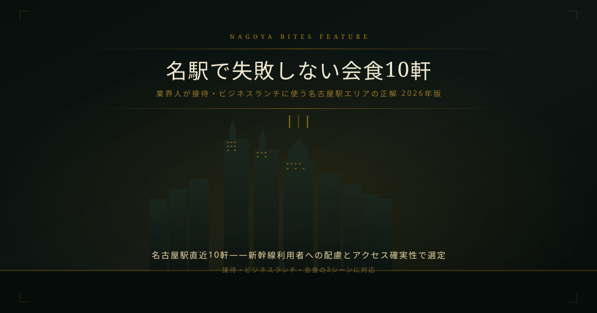

Feature — 業界人コラム — 名駅・会食
名駅で失敗しない会食10軒
【2026年版・業界人が接待・ビジネスランチに使う名古屋駅エリアの正解】
名古屋駅エリアで会食を選ぶ時の基準は「出張者への配慮」と「アクセスの確実性」だ。新幹線直結という立地は接待の第一条件になるが、それだけでは不十分。業界人目線で「失敗しない」10軒の構造を解説する。
Editor's Note — この特集の選定基準
- 名古屋駅から徒歩圏内（出張者・新幹線利用者への配慮）
- 個室または半個室が確実に確保できる業態
- 料理の品質と接客トーンが業態コンセプトと一致している
- 会食・接待シーンで「話の邪魔にならない」落ち着きがある
名駅エリアは飲食店の数が多い分、選択肢が多すぎて逆に迷いやすい。業界人が名駅で会食先を選ぶとき、最初に確認するのは「相手が新幹線を使うか否か」だ。東京・大阪から来る出張者であれば、JR名古屋駅直近から10分以内の立地は非常に重要になる。本特集はそのフィルターを通過した10軒を業界視点で解説する。
01 — 厳選10軒

すだく 名古屋国際センター店
「ホルモン×刺し（生食）」の組み合わせは、鮮度管理と仕入れルートの質が直接クオリティに出る業態。名古屋国際センターという競合の少ない立地での高評価は、素材力への信頼が口コミで広がっていることを示す。


THE SEJONG GEMS ザ セジョン ジェムズ 名駅店今月の新顔
SEJONGブランドの名駅展開は栄店と共に韓国焼肉の名古屋での認知基盤を広げている。GEMSを冠した高級ラインとしての位置付けは韓国焼肉の単価帯を引き上げるブランド戦略として有効。
業界人の視点：名駅会食で失敗しない3つの読み
1. 「東口か西口か」で店のキャラが変わる — 名古屋駅東口は出張者・観光客が多く回転優先の業態が集中する。西口は地元固定客が厚く、落ち着いた会食向けの業態が生き残りやすい。接待相手が「常連感のある静かな店」を好むなら西口エリアに手がかりがある。
2. 「炭火」「炉端」は接待でも話ができる演出 — 鉄板焼きや目の前調理は視覚的なインパクトがある一方、調理中の音や煙で会話が途切れやすい。炭火・炉端は「香り」で演出しながら音がないため、ビジネス会食での会話の流れを邪魔しない。本特集でこのカテゴリを複数選定した理由はここにある。
3. 郷土料理は「名古屋を案内する」文脈に使える — 東京・大阪からの出張者を迎えるとき、名古屋の文化を案内する会食は印象が残りやすい。名古屋めし・九州料理（博多炉端）・秋田郷土料理——どのジャンルも「この店は名古屋でしか体験できない」という文脈が作れる。相手を「お客として案内する」感覚が出せる選択だ。